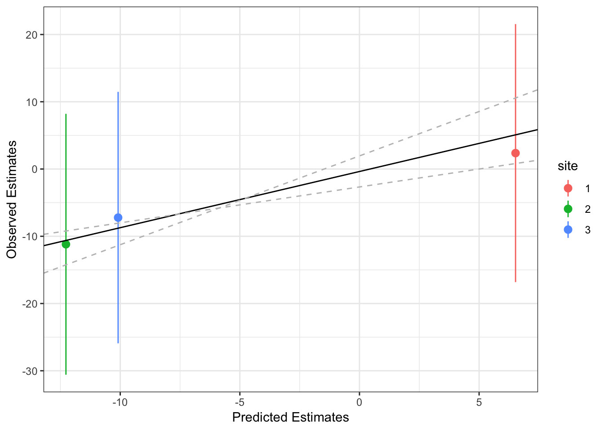
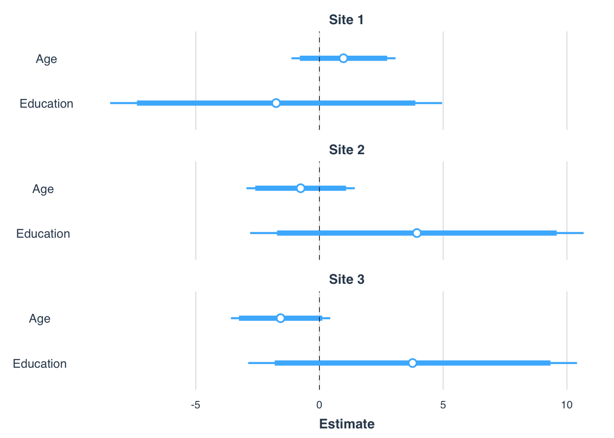

We are increasingly working with multi-site studies, which is great, but there is the risk of overlooking systematic differences between geographical sites, that may result in a biased model.
An example could be a different testing environment, and different levels of experience of the staff, depending on the site. If a centre in a certain country comes with decades of experience with a certain technique (such as eye-tracking), we may expect to report slighly more accurate measures compared to a centre where the technique is used for the first time.
Here we present an handy way of assessing bias depending on site, inspired by the methods explained in the HilL&Gelman book “Data Analysis Using Regression and Multilevel/Hierarchical Models” https://g.co/kgs/zkuYrJ
We are going to attach some invented site and outcome info to the lalonde datasent. The example dataframe lalonde contains data of two treatment groups with demographic information. Site info is represented by a factor with 3 levels (centre 1, centre 2…), while outcome is a continous variable with normal distribution.
set.seed(7) #set seed when generating data
library(arm)
data(lalonde)
lalonde$site <- factor(sample(x = c(1:3),
size = nrow(lalonde),
replace=T))
lalonde$outcome <- rnorm(n = nrow(lalonde),
mean = 0,
sd = 100)
head(lalonde)## age educ black hisp married nodegr re74 re75 re78 u74 u75 treat site
## 1 37 11 1 0 1 1 0 0 9930.05 1 1 1 3
## 2 22 9 0 1 0 1 0 0 3595.89 1 1 1 2
## 3 30 12 1 0 0 0 0 0 24909.50 1 1 1 1
## 4 27 11 1 0 0 1 0 0 7506.15 1 1 1 1
## 5 33 8 1 0 0 1 0 0 289.79 1 1 1 1
## 6 22 9 1 0 0 1 0 0 4056.49 1 1 1 3
## outcome
## 1 -83.62505
## 2 14.62839
## 3 -122.50289
## 4 -103.66269
## 5 -84.10610
## 6 -21.09494We fit a mixed model taking site as a covariante, and allowing random intercept and varying slopes per site (i.e, we obtain individual estimates for each site).
# install.packages(lmerTest)
library(lmerTest)
ml.fit <- lmer(outcome ~ treat + site + (0 + treat | site), data=lalonde)## boundary (singular) fit: see ?isSingularfixef(ml.fit)## (Intercept) treat site2 site3
## -2.602538 1.736718 16.451929 -7.645310We now make some predictions of the outcome based on our fixed and random effects. This procedure is based on one of the excellent and numerous resources provided by Ben Bolker https://github.com/bbolker
# create a ds with the essential levels of the predictors; leave the outcome blank to fill it with the predictions
newdat <- expand.grid(
treat=(c(0,1)),
site=factor(c("1","2","3")),
outcome = 0
)
# make predictions
newdat$outcome <- predict(ml.fit,newdat,re.form=NA)
# estimate confidence intervals of the predictions
mm <- model.matrix(terms(ml.fit),newdat)
pvar1 <- diag(mm %*% tcrossprod(vcov(ml.fit),mm))
tvar1 <- pvar1+VarCorr(ml.fit)$site[1] #adding the site specific variance on the slope
cmult <- 2
newdat <- data.frame(
newdat
, plo = newdat$outcome-cmult*sqrt(pvar1)
, phi = newdat$outcome+cmult*sqrt(pvar1)
, tlo = newdat$outcome-cmult*sqrt(tvar1)
, thi = newdat$outcome+cmult*sqrt(tvar1)
)We summarise the raw data to compare predictions with what happens in real life.
library(dplyr)
m_ci <- lalonde %>% group_by(site, treat) %>%
summarise(N=n(),
m=mean(outcome),
s=sd(outcome),
er=qnorm(0.975)*s/sqrt(N),
upCI=m+er,
downCI=m-er) %>%
select(treat, site, m, upCI, downCI) %>%
left_join(newdat, by=c("treat", "site")) # here we attach the predictions
head(m_ci)## # A tibble: 6 x 10
## # Groups: site [3]
## treat site m upCI downCI outcome plo phi tlo thi
## <dbl> <fct> <dbl> <dbl> <dbl> <dbl> <dbl> <dbl> <dbl> <dbl>
## 1 0 1 3.17 23.8 -17.4 -2.60 -22.1 16.9 -22.1 16.9
## 2 1 1 -10.0 18.5 -38.6 -0.866 -22.5 20.7 -22.5 20.7
## 3 0 2 13.4 34.4 -7.66 13.8 -4.40 32.1 -4.40 32.1
## 4 1 2 16.2 37.7 -5.22 15.6 -4.01 35.2 -4.01 35.2
## 5 0 3 -14.6 7.89 -37.1 -10.2 -28.2 7.73 -28.2 7.73
## 6 1 3 -2.55 23.2 -28.3 -8.51 -28.1 11.0 -28.1 11.0We now regress the predictions on the actual outcome (how well the actual data do fit the predictions of our model?). We add site in the random effect because we want to investigate how it influeces the deviance between the two.
reg <- lmer(outcome~m+ (0 + treat | site), data=m_ci)
ci <- confint(reg)[3:4,]## Computing profile confidence intervals ...And we plot the observed effect of treatment on the predicted effect, together with the slope of the treatment effect.
library(ggplot2)
g0 <- ggplot(data=subset(m_ci, treat==1), #only take the active treatment subset!
aes(y=outcome, x=m))+ #and plot actual values on preducted values
geom_point()
g0 +
geom_pointrange(aes(ymin = plo, ymax = phi, col=site)) + # add the prediction interval as an error bar
geom_abline(aes(intercept=fixef(reg)[1],
slope=fixef(reg)[2])) + # add the slope of the treatment effect
geom_abline(aes(intercept=ci[1,1], slope=ci[2,1]),
linetype="dashed", col="grey") + # add the confidence intervals of the treatment effect
geom_abline(aes(intercept=ci[1,2], slope=ci[2,2]),
linetype="dashed", col="grey") +
labs(y="Predicted Estimates", x="Observed Estimates")
We can see here that estimates of site 2 and 3 are quite in line with the treatment effect, as estimated by the model. The most reliable estimate is from site 2 (lies within the confidence interval), meaning that this model captures what is happening at site 2 quite well. However, the behaviour with site 3 is also not that bad, but below the actual effect. The estimate of the treatment effect is a bit more overestimated at site 1. This might be a useful information when considering the generalisation to all the sites of the treatment effect.
We may also examine the effect of specific factors depending on the site.
fit <- lm(outcome ~ age:site + educ:site, data=lalonde)
library(jtools)
plot_coefs(fit,
coefs = c("Age " = "age:site1", "Education " = "site1:educ",
"Age " = "age:site2", "Education " = "site2:educ",
"Age " = "age:site3", "Education " = "site3:educ"),
groups = list("Site 1" = c("Age ", "Education "), "Site 2" =
c("Age ", "Education "), "Site 3" = c("Age ",
"Education ")),
inner_ci_level = .90)
Here we can see that the effect of age is positive in site 1 (even though the CI overlap… probably not a significant difference!).